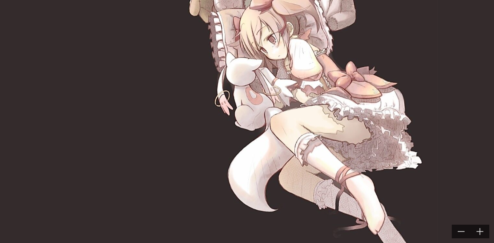

7<html>
	<body>
	    <marquee>
		<div align="center">
		
		<div>
		
		</marquee>
		
		 <!-- img标签，属性：width；图片的宽度 height；图片的高度 border:图片边框的粗细 src：图片的路径（相对路径）
		          align：图片的对齐方式有left right center
				  align只能让文本居中，不能让图片单独居中
				  align可以实现“图文混排”效果 align="left|right"
				  hspace:图片与左右文字之间的距离(水平距离)
				  vspace：图片与上下文字之间的距离（垂直距离）
			     注意事项：如果图片想等比例的缩放，只需要制定width或height其中的一个。
			               要想图片实现居中，可以给图片增加一个父元素（<div>）
						   也可以用层叠样式表处理例如：
							<div style="text-align:center;border:1px solid red">
			<marquee></marquee> 能使页面信息移动
			-->
	</body>
</html>